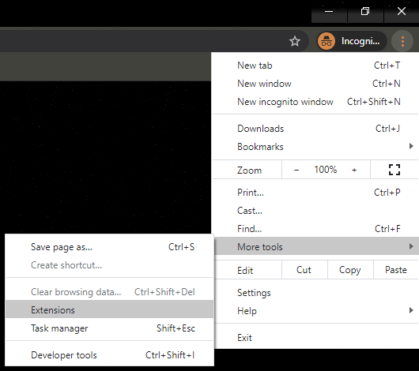
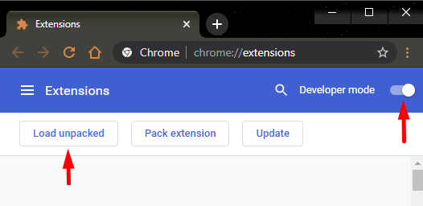
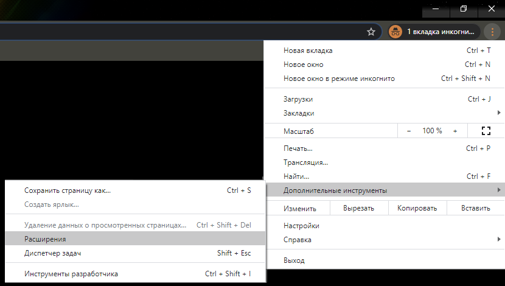
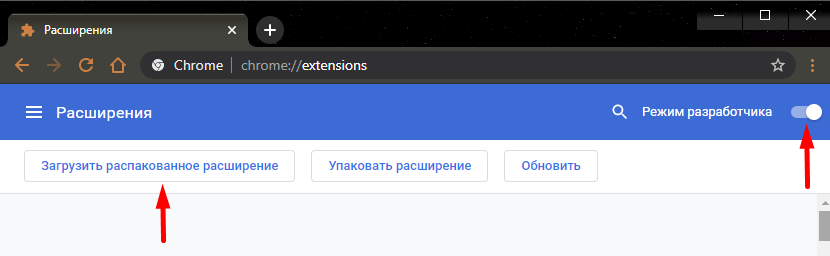

<div class="content-block content-install">
  <div class="content">
    <div class="install-block">
      <h1>Installation guide</h1>
      <div class="install-guide">
        <div class="eng">
          <p>English version:</p>
          <p>Firstly, select the version you like. <br>
            1.17.32 is the one that was in Chrome Store before removing. <br>
            1.17.36 is the latest build that we have tried to upload to Chrome Store. It has a lot of changes like removed WebRequest, removed unsafe-eval, every link is on HTTPS, removed market.csgo trade feature, removed anonymized statistics (region with amount of users)
          </p>
          <ul>
            <li>Download the zip archive with the extension</li>
            <li>Unzip the archive (for unpacking you will need an archiver program, for example 7zip)</li>
            <li>Go to the Chrome browser, to the "More tools/Extensions" section (you can simply insert "chrome://extensions" into the address bar)
            <br>
              
            </li>
            <li>Check the "Developer mode" checkbox</li>
            <li>Click the "Load unpacked extension" button<br>
              
            </li>
            <li>Select the unpacked archive with Steam Inventory Helper</li>
          </ul>
          <h2>Done!</h2>
        </div>
        <div class="ru">
          <p>Русская версия:</p>
          <p>В первую очередь выберите желаемую версию.<br>
            1.17.32 - это сборка, что была в Chrome Store перед удалением.<br>
            1.17.36 - это последняя сборка, которую мы пытались загрузить в Chrome Store. Она содержит множество изменений, таких как удаленный WebRequest, удаленный unsafe-eval, каждая ссылка на HTTPS, удаленная функция торговли market.csgo, удаленная анонимная статистика (регион с количеством пользователей)
          </p>
          <ul>
            <li>Скачайте zip архив с расширением</li>
            <li>Распакуйте архив (для распаковки понадобится программа архиватор, например 7zip)</li>
            <li>Зайдите в Chrome браузер, в раздел "Дополнительные инструменты/Расширения" (можно просто вставить в браузерную строку "chrome://extensions")
              <br>
              
            </li>
            <li>Поставьте галочку "Режим разработчика"</li>
            <li>Нажмите кнопку "Загрузить распакованное расширение"<br>
              
            </li>
            <li>Выберите распакованный архив со Steam Inventory Helper</li>
          </ul>
          <h2>Готово!</h2>
        </div>

        <div class="download-btns">
          <a class="button download" href="./sih.zip">DOWNLOAD 1.17.32</a>
          <a class="button download" href="./sih_store.zip">DOWNLOAD 1.17.36</a>
        </div>
      </div>
    </div>
  </div>
</div>
